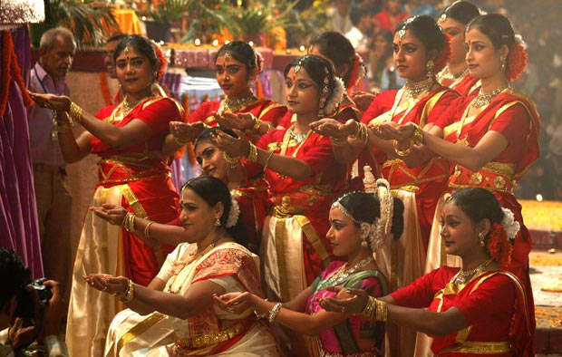
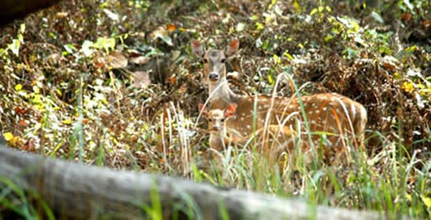

Uttar Pradesh
A Glimpse of the Entire Nation

"Species of grasses have been collected fromthe Gangetic plain. Herbs include medicinal plants like Rauwolfia serpentina, Viala Serpwns, Podophyllum, Hexandrum and Ephecra Gerardiana."
A fertile terrain of the Gangetic plain, the sprawling State spread over in 2,40,928sq.km. area, touches the Himalayan foothills to the north and The Vindhaya ranges to the South, surrounded by the State of Uttrakhand, Haryana, Delhi, Rajasthan, Bihar, Jharkhand, Madhya Pradesh and shares International border with Nepal.
It is here that one can dive down the stream of and ancient Indian philosiphy. It is the land which is Glorified by the stream of Indian spiritually i.e. the great Ganga and Yamuna and footprints of the legends like Ram, Krishna, Jian Tirthankars and sufi Saints and the sites associated with them.

Flora & Fauna
Forest constitute about 12.8% of the total geographical area of the state. The Himalayan region and the terai and bhabhar area in the Gangetic Plain have most of the forests. The Vindhyan forests consists mostly of scrubs. The district of Jaunpur, Ghazipur and Ballia have no forest land, while 31 other district have less forest area.
The Vindhyan Forest have Dhak, teak, mahua, salai,chironji and tendu. The hill forests also have a large variety of medicinal herbs. Sal, Chir, Deodar and sain yield building timber and railway sleepers. Chir also yield resin, the cheif source of resin and turpentine. Sisso is mostly used for furniture while Khair yields Kattha, which is taken with betel leaves or Pan. Semal and gutel are used as Matchwood and kanju in the plywood industry.
It provides the principal tanning material of the state. Some of the grasses such as baib and bamboo are raw material for the paper industry. Tendu leaves are used in making bidis(Indian Cigarettes), and cane is used in baskets and furniture.
Corresponding to its variegated topography and climate, the state has a wealth of animal life. Its avifauna is among the richest in the country.

Animals that can be found in the Jungles of Uttar Pradesh includes Tigers, Leopards, Wild Bears, Sloth Bears, Chital, Sambhars, Jackals, Porcupines, Jungle Cats, Hares, Squirrels, Monitor Lizards, and Foxes. These all can be seen in the highest mountains ranges. There are several Parks and sanctuaries in Uttar Pradesh that are home to a variety of species that are extinct in other parts of North India, such as the endangered Bengal Florican and the successfully reintroduced one-horned Rhinoceros.
The splendid and vast hinterlands of this state are alive with expectionally diverse wildlife just waiting to be discovered. So rich is the population of avifauna here that the birds not only cluster around lakes but also agricultural fields in various parts of the state. The state has Dudhwa National Park and series of birds and wildlife sanctuaries which have a wide variety of exotic birds that flock to the lakes, including the black-necked stork, the stunning Sarus Crane, Several vulture species and more.